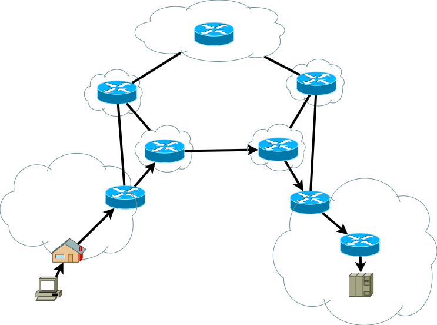
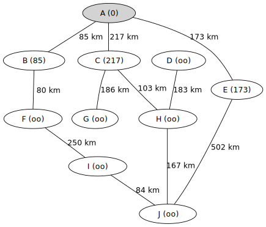
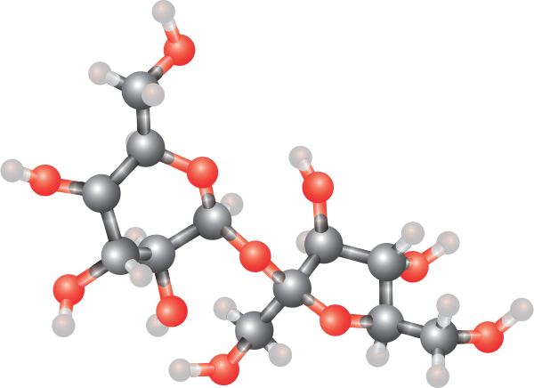
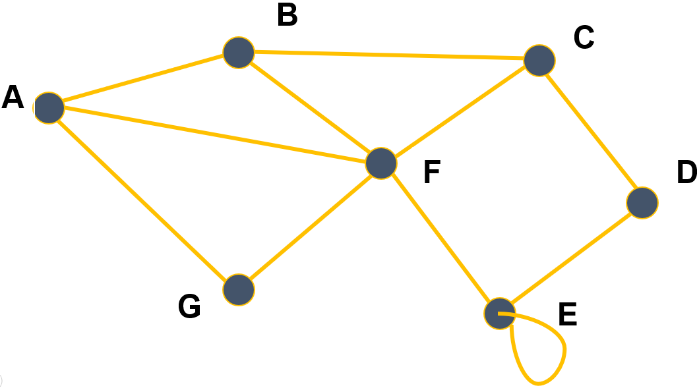
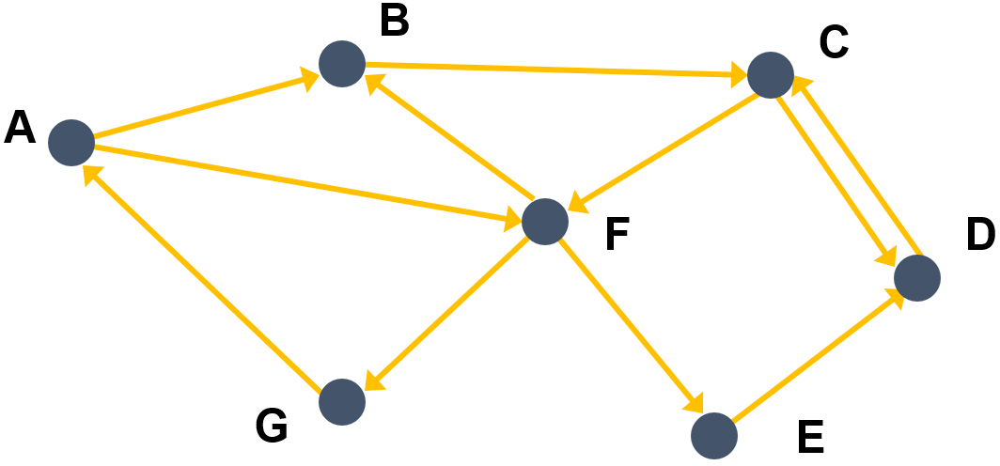
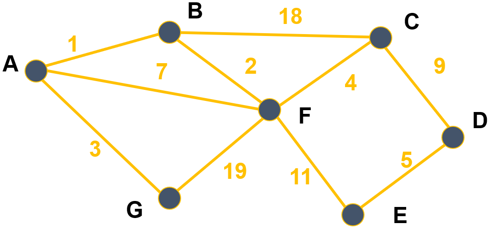

Références :
- Equipe pédagoqique DIU EIL, Université de Nantes.
Germain BECKER, Lycée Mounier, ANGERS

Les graphes sont une structure de données très riche permettant de modéliser des situations variées de relations entre un ensemble d'entités :

Source : Wikipedia, Mro, licence CC BY-SA 3.0
Source : Pixabay

Source : Wikipedia, HB, licence CC BY-SA 3.0

Source : Wikipedia, William Crochot, licence CC BY-SA 4.0
Les relations peuvent être orientées ou non.
Un graphe est constitué d'un ensemble de sommets et dans le cas orienté d'un ensemble d'arcs reliant chacun un sommet à un autre, dans le cas non orienté d'un ensemble d'arêtes entre deux sommets.
Mathématiquement, un graphe $G$ est donc un couple formé de deux ensembles : $X = \{ x_1, x_2, \ldots, x_n \}$ dont les éléments sont appelés les sommets et un ensemble $A = \{a_1, a_2, \ldots, a_m\}$ dont les éléments sont appelés les arêtes dans le cas non orienté ou les arcs dans le cas orienté. Une arête (ou un arc) $a_i$ est un couple de deux sommets, par exemple : $a_i = (x_2, x_5)$ symbolise le lien (arête ou arc) entre les sommets $x_2$ et $x_5$. On peut noter $G = (X, A)$.
Dans le cas des graphes non orientés, les relations entre deux sommets se font dans les deux sens. On appelle ses relations des arêtes (edges en anglais), et on a les définitions suivantes.

Dans le cas des graphes orientés, les arêtes ont un sens et elles sont appelées arcs. Par exemple, l'arête $a = (x, y)$ indique qu'il y a un arc d'origine $x$ et d'extrémité finale $y$. De plus, on a les définitions suivantes.

Certains graphes (orientés ou non) sont dits valués : on ajoute un coût (ou valuation, ou poids) à chaque arête/arc. Dans le cas d'un graphe représentant un réseau routier, le coût sur chaque arête pourrait, par exemple, être la distance entre deux villes.

Une matrice $M$ est un tableau de nombres, qui peut être représenté en machine par un tableau de tableaux (ou une liste de listes) noté matrice. Chaque nombre de cette matrice est repéré par son numéro de ligne $i$ et son numéro de colonne $j$. On note ce nombre $M_{i,j}$ et on peut y accéder par l'instruction matrice[i][j].
Un graphe à $n$ sommets peut être représentée par une matrice d'adjacence de taille $n\times n$, où la valeur du coefficient d'indice $i,j$ dépend de l'existence d'une arête ou d'un arc reliant les sommets $i$ et $j$.
Exemple (graphe non orienté) : Si les sommets $A, B, C, \ldots$ du graphe
sont respectivement numérotés $0$, $1$, $2$, etc. alors sa matrice d'adjacence est
$$M = \left (\begin{array}{ccccccc} 0& 1& 0& 0& 0& 1& 1 \\ 1& 0& 1& 0& 0& 1& 0 \\ 0& 1& 0& 1& 0& 1& 0 \\ 0& 0& 1& 0& 1& 0& 0 \\ 0& 0& 0& 1& 1& 1& 0 \\ 1& 1& 1& 0& 1& 0& 1 \\ 1& 0& 0& 0& 0& 1& 0 \end{array}\right)$$Par exemple, le sommet $C$ correspond à la troisième ligne. Celle-ci contient dans cet ordre les nombres 0, 1, 0, 1, 0, 1, 0 donc cela signifie qu'il y a des arêtes $(C,B)$, $(C, D)$ et $(C,F)$ (les 1) mais pas entre $C$ et les sommets $A$, $C$, $E$ et $G$ (les 0).
Cette matrice peut être mémorisée en machine par le tableau de tableaux suivant.
matrice = [
[0, 1, 0, 0, 0, 1, 1],
[1, 0, 1, 0, 0, 1, 0],
[0, 1, 0, 1, 0, 1, 0],
[0, 0, 1, 0, 1, 0, 0],
[0, 0, 0, 1, 1, 1, 0],
[1, 1, 1, 0, 1, 0, 1],
[1, 0, 0, 0, 0, 1, 0]
]
Dans le cas d'un graphe non orienté, la matrice d'adjacence est nécessairement symétrique par rapport à sa diagonale : on a $M_{i,j} = M_{j,i}$.
Exemple (graphe orienté) :
C'est le même principe en faisant attention au sens des arcs : $M_{i,j} = 1$ s'il y a un arc d'origine $i$ et d'extrémité $j$ et $M_{i,j} = 0$ sinon. Ainsi, le graphe
a pour matrice d'adjacence
Par exemple, le sommet $C$ correspond à la troisième ligne. Celle-ci contient dans cet ordre les nombres 0, 0, 0, 1, 0, 1, 0 donc cela signifie qu'il y a des arcs $(C,D)$ et $(C,F)$ (les 1) mais pas entre $C$ et les autres sommets (les 0).
Comme les arcs ont un sens, la matrice d'adjacence d'un graphe orienté n'est générallement pas symétrique.
Une autre façon de représenter un graphe est d'associer à chaque sommet la liste des sommets auxquels il est relié. Dans le cas d'un graphe orienté, on parle de liste de successeurs, alors que dans le cas d'un graphe non orienté on parle de liste de voisins.
Une façon simple et efficace est d'utiliser un dictionnaire où chaque sommet est associé à la liste de ses successeurs/voisins.
Exemples :
dico1 = {
"A": ["B", "F", "G"],
"B": ["A", "C", "F"],
"C": ["B", "D", "F"],
"D": ["C", "E"],
"E": ["D", "E", "F"],
"F": ["A", "B", "C", "E", "G"],
"G": ["A", "F"]
}
dico2 = {
"A": ["B", "F"],
"B": ["C"],
"C": ["D", "F"],
"D": ["C"],
"E": ["D"],
"F": ["B", "E", "G"],
"G": ["A"]
}
La matrice d'adjacence est simple à mettre en oeuvre mais nécessite un espace mémoire proportionnel à $n \times n$ (où $n$ est le nombre de sommets). Ainsi, un graphe de 1000 sommets nécessitent une matrice d'un million de nombres même si le graphe contient peu d'arêtes/arcs. Pour le même graphe contenant peu d'arêtes/arcs, le dictionnaire ne mémoriserait pour chaque sommet que les voisins/successeurs (les 1) sans avoir à mémoriser les autres (les 0). En revanche, pour un graphe contenant beaucoup d'arêtes/arcs, la dictionnaire occuperait plus d'espace mémoire que la matrice d'adjacence.
Cela implique en outre que l'accès aux voisins/sucesseurs d'un sommet est plus rapide avec le dictionnaire car il n'est pas nécessaire de parcourir toute la ligne de la matrice ($n$ valeurs) alors même que celle-ci peut ne contenir que très peu de 1.
De plus, l'utilisation d'un dictionnaire permet de nommer les sommets sans ambiguité et ne les limite pas à des entiers comme c'est le cas pour la matrice d'adjacence (même si on peut associer chacun de ces entiers au sommet correspondant, ce que nous avons fait précédemment).
Enfin, au lieu d'utiliser le type liste (list de Python ici) pour mémoriser les voisins/successeurs, on peut avantageusement utiliser le type ensemble (type prédéfini set de Python) qui est une structure de données permettant un accès plus efficace aux éléments (l'implémentation se fait par des tables de hachage, hors programme de NSI).
A faire : tous les exercices du notebook d'activités !
La fin de ce cours résume une partie de ce qui a été fait en exercices, notamment deux implémentations du type GrapheNonOriente défini par l'interface suivante :
faire_graphe(sommets) pour construire un graphe (sans les arêtes) à partir de la liste sommets de ses sommets.ajouter_arete(G, x, y) pour ajouter une arête entre les sommets x et y du graphe G.sommets(G) pour accéder à la liste des sommets du graphe G.voisins(G, x) pour accéder à la liste des voisins du sommet x du graphe G.La première implémentation se fait par une classe GrapheNoMa s'appuyant sur la représentation par une matrice d'adjacence et la seconde par une classe GrapheNoLs s'appuyant sur les listes de successeurs (qui sont les voisins dans le cas d'un graphe non orienté).
On termine en présentant comment passer d'une représentation à l'autre.
Voici la classe GrapheNoMa s'appuyant sur une matrice d'adjacence.
class GrapheNoMa:
def __init__ (self, sommets):
self.som = sommets
self.dimension = len(sommets)
self.adjacence = [[0 for i in range(self.dimension)] for j in range(self.dimension)]
def ajouter_arete(self, x, y):
i = self.som.index(x)
j = self.som.index(y)
self.adjacence[i][j] = 1
self.adjacence[j][i] = 1
def sommets(self):
return self.som
def voisins(self, x):
i = self.som.index(x)
return [self.som[j] for j in range(self.dimension) if self.adjacence[i][j] == 1]
Voici la classe GrapheNoLs s'appuyant sur un dictionnaire contenant les listes de successeurs de chaque sommet.
class GrapheNoLs:
def __init__ (self, sommets):
self.som = sommets
self.dic = {sommet: [] for sommet in self.som} # création par compréhension
def ajouter_arete(self, x, y):
if y not in self.dic[x]:
self.dic[x].append(y)
if x not in self.dic[y]:
self.dic[y].append(x)
def sommets(self):
return self.som
def voisins(self, x):
return self.dic[x]
On peut alors créer des graphes comme objets de ces deux classes et leur ajouter des arrêtes.
# graphe g1 représenté par une matrice d'adjacence
g1 = GrapheNoMa(["a", "b", "c", "d"])
g1.ajouter_arete("a", "b")
g1.ajouter_arete("a", "c")
g1.ajouter_arete("c", "d")
# graphe g2 représenté par liste de successeurs
g2 = GrapheNoLs(["a", "b", "c", "d"])
g2.ajouter_arete("a", "b")
g2.ajouter_arete("a", "c")
g2.ajouter_arete("c", "d")
On peut accéder aux graphes à travers les fonctions de l'interface du type abstrait de manière totalement identique.
print(g1.sommets())
print(g1.voisins("c"))
print(g2.sommets())
print(g2.voisins("c"))
En Python, un utilisateur malin pourra observer la façon dont sont mémorisées les graphes dans les deux cas :
g1.adjacence
g2.dic
Mais nous avons vu qu'il est possible de palier à ce problème en définissant une méthode de représentation identique dans chacune des deux classes pour masquer cette différence d'implémentation, qui importe peu à l'utilisateur de la classe.
Les deux implémentations sont totalement équivalentes et on peut passer de l'une à l'autre simplement en énumérant les sommets et les voisins depuis une représentation tout en construisant l'autre représentation.
Par exemple, la fonction suivante permet de passer d'une matrice d'adjacence à une liste de successeurs (la fonction de traduction réciproque est similaire).
def ma_to_ls(gma):
gls = GrapheNoLs(gma.sommets())
for x in gma.sommets():
for y in gma.voisins(x):
gls.ajouter_arete(x,y)
return gls
g3 = ma_to_ls(g1)
print("représentation de départ :", g1.adjacence)
print("traduction :", g3.dic)
On peut implémenter le type abstrait
GrapheOrientede façon quasiment similaire (fait en exercices).
GrapheNonOriente (resp. GrapheOriente) et qu'elles sont équivalentes, on peut notamment passer de l'une à l'autre facilement.Références :
Germain BECKER, Lycée Mounier, ANGERS